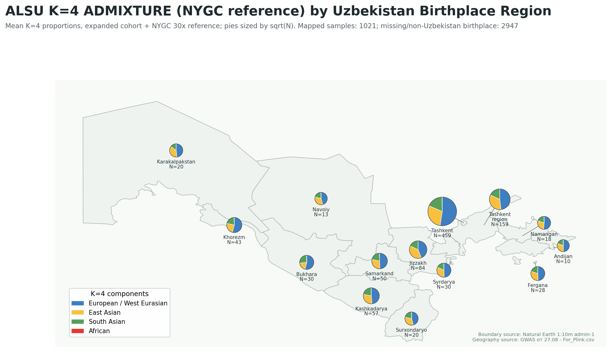
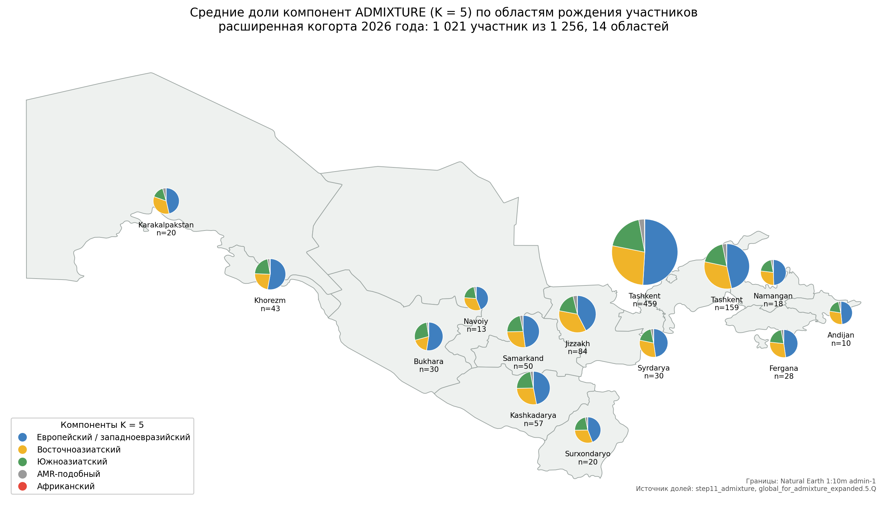
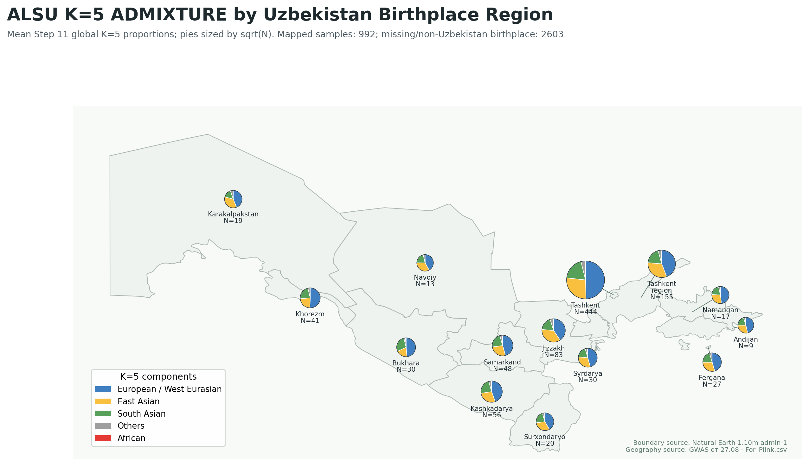

UPDATE 2026-10-04: what the PI_HAT–KING discordance is made of
1. Five samples explain almost all flagged pairs
Of the 6,228 pairs with PI_HAT ≥ 0.185, 6,110 (98.1%) contain at least one of 6 samples, and 5 of them (ALSU_0242, ALSU_0402, ALSU_0499, ALSU_1030, GWAS2026_0016) appear in 1,184 pairs each, i.e. they exceed PI_HAT 0.185 with nearly every other sample in the merged data set (1,192 samples are involved in total). A person is not a close relative of 1,184 others; this is a data-quality signature. Only 118 pairs involve none of these samples.
| Sample (alias) | Pairs flagged | Mean PI_HAT in those pairs | Share discordant (PI_HAT-only) | Missing genotypes | Inbreeding coefficient F | In final 1,256 cohort |
|---|---|---|---|---|---|---|
| ALSU_0242 | 1184 | 0.317 | 85% | 11.6% | -0.37 | no |
| GWAS2026_0016 | 1184 | 0.312 | 43% | 17.6% | -0.19 | no |
| ALSU_0402 | 1184 | 0.337 | 66% | 12.7% | -0.42 | no |
| ALSU_0499 | 1184 | 0.342 | 70% | 11.5% | -0.45 | no |
| ALSU_1030 | 1184 | 0.297 | 91% | 17.2% | -0.38 | no |
| ALSU_0001 | 205 | 0.203 | 98% | 16.4% | -0.68 | no |
For comparison, over all 1,193 samples the median missingness is 0.08% (mean 1.3%) and the median F is +0.02. The six samples have 11–18% missing genotypes and a strongly negative F, i.e. far more heterozygous genotypes than expected. High missingness together with excess heterozygosity is typical of poor-quality or mixed DNA, and it inflates PLINK’s PI_HAT against everyone. This is consistent with, but does not prove, the cause; the original array QC used a call-rate cut-off of 20% missing, which these samples pass. (QC measured on the 104,411 LD-pruned SNPs of the merged set; script hub.sh, DRAGEN /staging/tmp/scratch/hub_check/.)
Consequence for the pair supported by both PC-Relate and RelateAdmix: ALSU_0218 / ALSU_0242 (PC-Relate 0.153, RelateAdmix 0.233) involves ALSU_0242, one of the five poor-quality samples. It should not be treated as a trustworthy relative pair without re-genotyping or a check of the sample.
2. Ancestry distances recomputed on the NYGC reference (K=4)
The 1,193 samples of the relatedness set were projected onto the fixed allele frequencies of the NYGC K=4 ADMIXTURE run (admixture -P with adm_in.4.P) on the 17,484 SNPs present in both data sets with identical alleles; script /staging/tmp/proj_k4.sh, output /staging/tmp/scratch/proj_k4/. This gives ancestry for all 1,193 samples; the earlier K=5 distances existed for only 1,181 of the 6,228 pairs. Validation: for the 1,096 samples that are also in the full K=4 run the projected and the full-run components agree as follows.
| Component | Correlation | RMSE |
|---|---|---|
| EUR | 0.987 | 0.024 |
| EAS | 0.991 | 0.020 |
| SAS | 0.943 | 0.026 |
| AFR | 0.957 | 0.011 |
Mean Euclidean K=4 distance between the two members of a pair: 0.151 for KING-and-PI_HAT concordant pairs (n = 1,734) and 0.221 for PI_HAT-only discordant pairs (n = 4,494). The direction matches the earlier K=5 result (0.130 vs 0.160 on the 1,181 pairs that had it; on those same pairs the new distances are 0.140 vs 0.165, and the two distance sets correlate at r = 0.93). By tertile of distance:
| Distance tertile | K=4 distance | Pairs | Concordant | Discordant | Discordance rate |
|---|---|---|---|---|---|
| low | 0.00–0.10 | 2,076 | 618 | 1,458 | 70% |
| mid | 0.10–0.22 | 2,076 | 797 | 1,279 | 62% |
| high | 0.22–1.10 | 2,076 | 319 | 1,757 | 85% |
3. RelateAdmix and PC-Relate do not need re-running on the NYGC reference
RelateAdmix received its ancestry input from an ADMIXTURE K=5 run on the merged 1,193-sample LD-pruned file itself (merged_pruned.5.Q/.P; script scripts/remote_relateadmix_run.sh), and PC-Relate uses PCs of the same file. Neither used the deprecated global 1000G run, so their results (27 pairs with RelateAdmix kinship-equivalent ≥ 0.0884; 48 with PC-Relate ≥ 0.0884; 1 resp. 5 of the PI_HAT-only pairs) are unaffected by the reference change. Only the “Step 11 K=5 distance” analysis and the birthplace map depended on the deprecated run, and both are replaced here.
4. Revised recommendation
- Do not use PI_HAT ≥ 0.185 lists from the merged pre-QC array data to remove samples. Check per-sample missingness and heterozygosity first: a sample with PI_HAT above threshold against hundreds of others is a QC failure.
- Re-check the QC cut-offs of the original array pipeline (20% missingness) in the light of these samples; the final cohort already excludes them.
- Keep KING as the operational screen and PC-Relate/RelateAdmix as validation, on samples that passed QC.
5. Birthplace map on the NYGC reference

Mean K=4 ADMIXTURE proportions (expanded cohort + NYGC 30x reference) by Uzbekistan birthplace region; pies sized by √N; 1,021 mapped samples. Component names come from the reference means (EUR 0.97, EAS 1.00, SAS 0.89, AFR 0.96). Values: data/alsu_uzbekistan_k4_nygc_birthplace_summary.tsv; script scripts/build_uzbekistan_admixture_map_nygc.py.
The regional pattern is flat: mean EUR-like shares range from 0.44 to 0.54 and EAS-like shares from 0.20 to 0.38 across regions, with small-sample regions (n < 30) noisy. The statistical test is on step 11.
Superseded: August 2026 map on the deprecated global K=5 run (kept for the record)

step11_admixture/global_for_admixture_expanded.5.Q (3,804 rows; UZB n = 1,256).
1,021 of the 1,256 Uzbek participants carry an Uzbekistan birthplace code and map to all
14 first-level regions; 199 have no survey record and 36 were born outside Uzbekistan.
Pies sized by √N. Component labels were derived from the data, by averaging Q over the
1000 Genomes reference samples in the same run (EUR 0.962, EAS 0.996, SAS 0.892, AFR 0.955
on their respective components) rather than assumed from column order.
Per-region values: data/alsu_uzbekistan_k5_birthplace_summary_expanded.tsv.
Previous version (Spring 2026 run, UZB n = 1,047) — kept for reference

.fam/.5.Q = 3,595 rows; UZB n = 1,047), mapping 992 participants.
Retained so the two cohorts can be compared directly. The regional pattern is the same in
both; the counts differ because the expanded cohort adds the 48-sample rescan and the two
2026 genotyping batches, and because the 45 unmapped 1000 Genomes samples that the earlier
cluster script had silently relabelled "UZB" are excluded here.
Per-region values: data/alsu_uzbekistan_k5_birthplace_summary.tsv.
Draft date: 2026-05-18
Objective
The working question was whether recent-relatedness estimates in the Uzbek GSA data are affected by the strong admixture structure of the population represented by two datasets: ALSU and the new GWAS2026 array set. The practical aim was to inspect the existing ALSU admixture results, quantify where relatedness methods disagree, investigate admixture-aware approaches such as RelateAdmix and PC-AiR/PC-Relate, and prepare the results for discussion.
The analysis below is intentionally conservative. It does not assume that one method is automatically correct. Instead, it measures discordance among KING, PLINK PI_HAT, PCA distance, and Step 11 ADMIXTURE K=5 ancestry distances, then validates the discordant calls with PC-AiR/PC-Relate and RelateAdmix.
Theoretical Background
1. Overview of the Problem
Estimating pairwise relatedness from genetic data is fundamental to genome-wide association studies (GWAS), quantitative genetics, and population genomics. Accurate relatedness inference is necessary to correct for family structure that can inflate false-positive rates, to identify cryptic relatives, and to avoid sample duplicates. However, the problem becomes challenging when cohorts include individuals from recently admixed populations or from multiple ancestries. Simple metrics, such as the proportion of allele mismatches, are confounded by population structure because baseline genetic similarity varies with ancestry. Thus, robust methods have been developed to disentangle recent familial relatedness from background genetic similarity due to shared ancestry or admixture.
2. PLINK PI_HAT
PLINK's PI_HAT is a classic estimator based on identity-by-descent (IBD) probabilities. It uses the fraction of the genome sharing 0, 1, or 2 alleles identical by descent (Z0, Z1, Z2) calculated from observed genotype patterns. PI_HAT = 0.5×Z1 + Z2, giving 1.0 for monozygotic twins or duplicate samples, 0.5 for parent-offspring or full siblings, and 0.25 for half-siblings. While widely used, PI_HAT is sensitive to allele frequency misspecification and population stratification. In admixed cohorts, unrelated individuals from different ancestral backgrounds can appear to share fewer alleles, deflating PI_HAT, while within-population relatives may be misclassified if reference allele frequencies do not match the target population. Consequently, modern pipelines often treat PI_HAT as a diagnostic rather than a primary estimator.
3. KING (Kinship INference from GWAS)
KING addresses the limitations of simple mismatch rates by using a method-of-moments estimator that is robust to population structure under panmictic conditions. The robust estimator (KING-robust) is based on the proportion of SNPs where both individuals are homozygous for opposite alleles, a quantity that is nearly zero for unrelated individuals but increases systematically for relatives. KING does not require prior allele frequencies and is "sample-invariant", making it a default choice for many GWAS QC pipelines. However, recent work has shown that KING-robust can produce biased estimates in recently admixed populations, generating negative kinship coefficients for inter-population pairs and overestimating relatedness for intra-population pairs with complex ancestry. Thus, while excellent for homogeneous cohorts, KING alone is insufficient for highly structured or admixed samples.
4. RelateAdmix
RelateAdmix was specifically developed to estimate relatedness in admixed populations. It is a maximum-likelihood method that uses global ancestry proportions (e.g., from ADMIXTURE or RFMix) to model the expected allele sharing for each relationship category. By conditioning on individual-specific ancestry, RelateAdmix disentangles recent family relatedness from shared ancestry due to population admixture. Simulations show it outperforms KING and PLINK for detecting second- and third-degree relatives in admixed cohorts, with substantially lower false-positive rates. The main requirement is accurate ancestry proportion estimates for each individual, which can be obtained from the same genotype data. RelateAdmix is particularly valuable for studies of cosmopolitan or recently admixed groups, such as Latin American, Central Asian, or African diaspora populations.
5. PC-Relate
PC-Relate, implemented in the GENESIS R package, offers another robust approach that leverages principal components (PCs) to model population structure. Rather than requiring explicit ancestry proportion estimates, PC-Relate uses the top genetic PCs as covariates to adjust kinship calculations. The method first uses PC-AiR to compute ancestry-representative PCs that are not driven by close relatives, then these PCs are incorporated into the kinship estimation to correct for structure. PC-Relate is computationally efficient, works with large cohorts, and provides unbiased kinship estimates even when ancestry is continuous (e.g., clinal variation). It does not need external reference panels or ancestry labels, making it a convenient and powerful choice for many structured populations.
6. Comparison and Conclusion
Each method occupies a different niche. PI_HAT is simple but outdated for structured populations. KING remains an excellent first pass for homogeneous samples or duplicate detection but can fail in admixed cohorts. RelateAdmix is the most theoretically justified for recently admixed groups, provided high-quality ancestry proportions are available. PC-Relate offers a practical balance, requiring only PCs and handling continuous structure without admixture labels. In practice, a tiered approach is recommended: use KING to flag duplicates and very close relatives (kinship > 0.354), then apply PC-Relate or RelateAdmix for remaining samples to infer distant relatedness in structured populations. For the Uzbek cohort analysed here — which lies on a European–East Asian cline — KING alone is likely insufficient; switching to an admixture-aware method is essential for accurate relatedness estimation and downstream GWAS correction.
Verified Datasets and Files
Local Step 11 report
- Local file:
steps/step11.html - Published page reviewed by the user:
https://toki-bio.github.io/ALSU-analysis/steps/step11.html - Relevant embedded Step 11 display data:
- Populations: AFR, EUR, SAS, EAS, AMR, UZB.
- UZB sample count in displayed K summaries: 1,047.
- K=5 display labels:
E.Asian,African,Americas,S.Asian,European. - UZB K=5 display vector:
0.2884, 0.0026, 0.0290, 0.1916, 0.4884. - Interpretation in the page: K=5 is the most parsimonious model; Uzbeks show approximately 48.8% European / West Eurasian, 28.8% East Asian, 19.2% South Asian, and 2.9% AMR-like ancestry.
- K=8 is described as the nominal CV minimum, but only marginally better than K=7 and less interpretable.
DRAGEN Step 11 / ADMIXTURE source files
Remote source files used for direct ancestry matching:
/staging/ALSU-analysis/spring2026/admixture/global_for_admixture.fam/staging/ALSU-analysis/spring2026/admixture/global_for_admixture.5.Q
Remote reference panel used to infer ADMIXTURE component labels:
/staging/ALSU-analysis/Fst_analysis/1000G_data/integrated_call_samples_v3.20130502.ALL.panel
The Spring 2026 ADMIXTURE files were checked directly. The .fam and .5.Q files have 3,595 rows. The cross-cohort ALSU sample map contains 1,098 ALSU samples; 1,020 matched the Spring 2026 ADMIXTURE .fam exactly, and 1,022 matched after unique normalized ID matching. Four normalized IDs were ambiguous and skipped.
ALSU plus GWAS2026 relatedness dataset
Merged cross-cohort base path:
/staging/ALSU-analysis/admixture_analysis/temp/dragen_array_test_20260513/cross_gwas2026_alsu_winter
Core files:
merged.{bed,bim,fam}cross_prune.prune.incross_king_00884.kin0cross_ibd_pihat_0125.genomesample_map.tsvcross_pca10.eigenveccross_pca10.eigenvaladmixture_king_pihat_pairs.tsvadmixture_king_pihat_summary.txt
Verified counts:
- Merged samples: 1,193 total.
- Cohorts in sample map: 1,098 ALSU and 95 GWAS2026.
- Merged SNPs: 237,062.
- LD-pruned SNPs used for relatedness and PCA: 104,411.
The merge was built earlier from:
- ALSU typed-array source bfile:
/staging/ALSU-analysis/winter2025/PLINK_301125_0312/ConvSK_mind20_dedup_snpqc - GWAS2026 source bfile:
/staging/ALSU-analysis/admixture_analysis/temp/dragen_array_test_20260513/gwas2026/plink/gwas2026_raw
PLINK IDs were cohort-prefixed during the merge, and original IDs were preserved in sample_map.tsv.
Uzbekistan birthplace map inputs
The geographic visualization uses the same Step 11 Spring 2026 global K=5 .fam and .Q files, copied locally for reproducible rendering:
data/step11_global_for_admixture.famdata/step11_global_for_admixture.5.Q
Geographic metadata came from GWAS от 27.08 - For_Plink.csv. The copy in the project folder was checked against C:\work\alsu\GWAS от 27.08 - For_Plink.csv and was byte-identical. The CSV has 1,815 rows and 246 columns, including coded fields for participant birthplace, participant residence, and birthplace fields for grandparents and partners. The map uses participant birthplace only.
The rendered artifacts are:
images/alsu_uzbekistan_k5_birthplace_map_expanded.png(current, expanded cohort n = 1,256)data/alsu_uzbekistan_k5_birthplace_summary_expanded.tsvimages/alsu_uzbekistan_k5_birthplace_map.png(superseded, Spring 2026 run n = 1,047)data/alsu_uzbekistan_k5_birthplace_summary.tsvdata/natural_earth_uzb_admin1.geojson
The map joins Step 11 ADMIXTURE sample IDs directly to the CSV Sample Number field. It maps 992 Uzbekistan-born Step 11 samples to 14 Uzbekistan first-level regions. The remaining Step 11 rows are either 1000 Genomes reference samples, missing from the GWAS survey CSV, or have non-Uzbekistan/missing birthplace codes.
Commands and Scripts Run
Remote inventory
Script:
scripts/remote_admix_relatedness_inventory.shExecution pattern from Windows PowerShell:
& "C:\Program Files\PuTTY\plink.exe" -batch -i "C:\Users\T\.ssh\id_ed25519.ppk" -m "C:\work\Surface\work\ALSU-analysis\scripts\remote_admix_relatedness_inventory.sh" copilot@100.104.25.22Purpose:
- Inventory global and Spring 2026 ADMIXTURE outputs on DRAGEN.
- Verify cross-relatedness files and merged bfile counts.
- Inspect candidate
.famand.Qfiles before using them.
Spring 2026 ADMIXTURE overlap check
Script:
scripts/remote_spring_admix_overlap_check.shExecution pattern:
& "C:\Program Files\PuTTY\plink.exe" -batch -i "C:\Users\T\.ssh\id_ed25519.ppk" -m "C:\work\Surface\work\ALSU-analysis\scripts\remote_spring_admix_overlap_check.sh" copilot@100.104.25.22Purpose:
- Verify byte-level formatting of
global_for_admixture.famandglobal_for_admixture.5.Q. - Count Spring 2026 ADMIXTURE rows.
- Count exact and normalized overlap between cross-cohort ALSU sample IDs and Step 11 ADMIXTURE sample IDs.
Key verified output:
FAM_ROWS 3595CROSS_ALSU_N 1098EXACT_OVERLAP 1020NORMALIZED_OVERLAP 1022AMBIGUOUS_NORMALIZED 4
Main KING / PI_HAT / PCA / ADMIXTURE-distance analysis
Script:
scripts/remote_admix_kinship_eval.shExecution pattern:
& "C:\Program Files\PuTTY\plink.exe" -batch -i "C:\Users\T\.ssh\id_ed25519.ppk" -m "C:\work\Surface\work\ALSU-analysis\scripts\remote_admix_kinship_eval.sh" copilot@100.104.25.22PCA command inside the script:
/staging/conda/envs/bioinfo/bin/plink2 \
--bfile "$BASE/merged" \
--extract "$BASE/cross_prune.prune.in" \
--pca 10 approx \
--threads 16 \
--out "$BASE/cross_pca10"Primary comparison thresholds:
- KING report threshold: kinship ≥ 0.0884, using
cross_king_00884.kin0. - PLINK relatedness screen: PI_HAT ≥ 0.185, selected from
cross_ibd_pihat_0125.genome. - PI_HAT file itself was generated with
--genome --min 0.125; the stricter PI_HAT ≥ 0.185 threshold was used for this discordance analysis.
The script writes:
- Pair-level table:
/staging/ALSU-analysis/admixture_analysis/temp/dragen_array_test_20260513/cross_gwas2026_alsu_winter/admixture_king_pihat_pairs.tsv - Summary table:
/staging/ALSU-analysis/admixture_analysis/temp/dragen_array_test_20260513/cross_gwas2026_alsu_winter/admixture_king_pihat_summary.txt
PC-Relate environment preparation
Script:
scripts/remote_pcrelate_env_prepare.shExecution pattern:
& "C:\Program Files\PuTTY\plink.exe" -batch -i "C:\Users\T\.ssh\id_ed25519.ppk" -m "C:\work\Surface\work\ALSU-analysis\scripts\remote_pcrelate_env_prepare.sh" copilot@100.104.25.22Purpose:
- Create an isolated R library at
/staging/ALSU-analysis/admixture_analysis/temp/dragen_array_test_20260513/pcrelate_env/Rlib. - Install or verify
BiocManager,gdsfmt,SNPRelate,GWASTools, andGENESIS.
R version on DRAGEN:
/usr/bin/Rscript- R version
4.5.1
Current status check script:
scripts/remote_pcrelate_status.shExecution pattern:
& "C:\Program Files\PuTTY\plink.exe" -batch -i "C:\Users\T\.ssh\id_ed25519.ppk" -m "C:\work\Surface\work\ALSU-analysis\scripts\remote_pcrelate_status.sh" copilot@100.104.25.22The PC-Relate R/Bioconductor environment is now ready. The first install attempt failed because igraph.so linked against ICU 75 and could not load libicui18n.so.75. Compatible ICU 75 libraries were then verified under /staging/miniconda3/lib and /staging/conda/envs/bioinfo/lib; the PC-Relate scripts were patched to export those directories on LD_LIBRARY_PATH. After rerunning the installer, igraph and GENESIS installed successfully. The latest status check showed gdsfmt, SNPRelate, GWASTools, GENESIS, igraph, and BiocParallel all loadable from the isolated library.
Guarded PC-Relate execution script:
scripts/remote_pcrelate_run.shExecution pattern:
& "C:\Program Files\PuTTY\plink.exe" -batch -i "C:\Users\T\.ssh\id_ed25519.ppk" -m "C:\work\Surface\work\ALSU-analysis\scripts\remote_pcrelate_run.sh" copilot@100.104.25.22This script checks required R packages before running any analysis. After the LD_LIBRARY_PATH fix described above, the readiness gate passed and the script ran the PC-AiR/PC-Relate workflow.
Files generated by the PC-Relate run:
/staging/ALSU-analysis/admixture_analysis/temp/dragen_array_test_20260513/pcrelate_env/run/merged_pruned.{bed,bim,fam}/staging/ALSU-analysis/admixture_analysis/temp/dragen_array_test_20260513/pcrelate_env/run/merged_pruned.gds/staging/ALSU-analysis/admixture_analysis/temp/dragen_array_test_20260513/pcrelate_env/run/pcrelate_kinBtwn.tsv/staging/ALSU-analysis/admixture_analysis/temp/dragen_array_test_20260513/pcrelate_env/run/pcrelate_comparison_summary.txt
PC-Relate comparison script:
scripts/remote_pcrelate_compare.shExecution pattern:
& "C:\Program Files\PuTTY\plink.exe" -batch -i "C:\Users\T\.ssh\id_ed25519.ppk" -m "C:\work\Surface\work\ALSU-analysis\scripts\remote_pcrelate_compare.sh" copilot@100.104.25.22Files generated by the comparison script:
/staging/ALSU-analysis/admixture_analysis/temp/dragen_array_test_20260513/pcrelate_env/run/pcrelate_vs_king_pihat_admix.tsv/staging/ALSU-analysis/admixture_analysis/temp/dragen_array_test_20260513/pcrelate_env/run/pcrelate_vs_king_pihat_admix_summary.tsv
RelateAdmix installation, run, and comparison
Script:
scripts/remote_relateadmix_run.shExecution pattern:
& "C:\Program Files\PuTTY\plink.exe" -batch -i "C:\Users\T\.ssh\id_ed25519.ppk" -m "C:\work\Surface\work\ALSU-analysis\scripts\remote_relateadmix_run.sh" copilot@100.104.25.22Purpose:
- Clone and build RelateAdmix from the official source repository.
- Reuse the same LD-pruned merged PLINK bfile used for PC-Relate (
merged_pruned, 1,193 samples and 104,411 SNPs). - Run ADMIXTURE K=5 on that exact pruned bfile to generate matching
.Pand.Qinputs for RelateAdmix. - Run RelateAdmix on all unordered sample pairs.
- Convert RelateAdmix
k0/k1/k2output to a kinship-equivalent value and compare against PI_HAT, KING, and PC-Relate.
Verified RelateAdmix source:
- Documentation:
https://www.popgen.dk/software/index.php/RelateAdmix - Source repository:
https://github.com/aalbrechtsen/relateAdmix - Commit built on DRAGEN:
dea1c987e4fa9be0967faffcfd67ba843d3666d9 - Binary:
/staging/ALSU-analysis/admixture_analysis/temp/dragen_array_test_20260513/relateadmix_env/relateAdmix/src/relateAdmix
Build command inside the script:
git clone https://github.com/aalbrechtsen/relateAdmix.git "$SRC"
make -C "$SRC/src" -f CPP_MakefileADMIXTURE prerequisite command inside the script:
(cd "$RUN" && "$ADMIXTURE" -j"$THREADS" merged_pruned.bed 5 | tee admixture_k5_for_relateadmix.log)The ADMIXTURE prerequisite completed in 53 QN/block iterations and wrote matching inputs:
/staging/ALSU-analysis/admixture_analysis/temp/dragen_array_test_20260513/relateadmix_env/run/merged_pruned.5.Q: 1,193 rows./staging/ALSU-analysis/admixture_analysis/temp/dragen_array_test_20260513/relateadmix_env/run/merged_pruned.5.P: 104,411 rows.
RelateAdmix command inside the script:
"$RELATEADMIX_BIN" \
-plink "$RUN/merged_pruned" \
-f "$RUN/merged_pruned.5.P" \
-q "$RUN/merged_pruned.5.Q" \
-o "$RUN/relateadmix_merged_pruned_k5" \
-P "$THREADS"RelateAdmix generated 711,028 all-pair estimates plus a header line. Output columns are ind1, ind2, k0, k1, k2, and nIter, with zero-based sample indices. For comparison to kinship thresholds, the script computes:
RelateAdmix PI_HAT-equivalent = k2 + 0.5 * k1
RelateAdmix kinship-equivalent = (k2 + 0.5 * k1) / 2Local summary copies:
data/relateadmix_vs_king_pihat_pcrelate_summary.tsvdata/relateadmix_allpairs_summary.tsvdata/relateadmix_top_pairs.tsv
Methodological Details
Why K=5 was used
Step 11 presents K=5 as the most parsimonious global ADMIXTURE resolution: all major continental components are resolved, while higher K values add finer structure with smaller interpretability gains. K=8 has a nominally lower CV error but is described as only marginally better than K=7. For relatedness diagnostics, K=5 is therefore a better operational ancestry space than a higher, less stable K.
Why raw ADMIXTURE columns were relabeled
ADMIXTURE component columns are arbitrary. The local Step 11 HTML display labels are not assumed to be the same as the raw .5.Q column order on DRAGEN. The analysis script inferred raw K=5 component labels by matching 1000 Genomes reference samples in the ADMIXTURE .fam against the 1000G superpopulation panel and computing superpopulation means for each raw Q column.
The inferred raw Spring 2026 K=5 labels were:
- Q1: EAS
- Q2: AMR
- Q3: SAS
- Q4: EUR
- Q5: AFR
The matched ALSU samples in the cross-cohort dataset had mean K=5 components:
- East Asian Q1: 0.286384
- AMR-like Q2: 0.036304
- South Asian Q3: 0.200567
- European / West Eurasian Q4: 0.471304
- African Q5: 0.005440
This agrees with the Step 11 page-level biological interpretation of Uzbek ancestry as a West Eurasian, East Asian, and South Asian mixture.
PCA distance analysis
The first test used PC10 Euclidean distance as a broad ancestry proxy. The merged bfile was LD-pruned to 104,411 SNPs, and PLINK2 PCA was run on the pruned SNPs.
For every pair with PI_HAT ≥ 0.185, the script classified the pair as:
concordant_king_pihat: present in KING output at kinship ≥ 0.0884.discordant_pihat_only: PI_HAT ≥ 0.185 but absent from the KING file, meaning KING kinship < 0.0884 or not reported.
Then the PC10 Euclidean distance was compared between concordant and discordant groups.
Direct K=5 ADMIXTURE distance analysis
The second, stronger test used Step 11 Spring 2026 K=5 Q vectors directly. This was possible only for matched ALSU samples, because GWAS2026 samples were not part of the Spring 2026 Step 11 ADMIXTURE run. Therefore, K=5 Q-distance summaries are directly interpretable mainly for ALSU+ALSU pairs; ALSU+GWAS2026 and GWAS2026+GWAS2026 pairs are mostly NA for Q-distance.
For each pair with PI_HAT ≥ 0.185, the script computed:
- Euclidean K=5 Q-vector distance.
- Absolute East Asian component difference.
- Absolute South Asian component difference.
- Absolute European / West Eurasian component difference.
- Q-distance tertile bin: low, mid, high.
- East Asian ancestry tertile combination.
PC-AiR / PC-Relate validation
The merged bfile was reduced to the same LD-pruned SNP list used for PCA:
/staging/conda/envs/bioinfo/bin/plink2 \
--bfile "$BASE/merged" \
--extract "$BASE/cross_prune.prune.in" \
--make-bed \
--out "$RUN/merged_pruned" \
--threads 16This produced 1,193 samples and 104,411 LD-pruned variants. The pruned PLINK data were converted to GDS with SNPRelate::snpgdsBED2GDS. SNPRelate::snpgdsIBDKING was then run with type = "KING-robust", useMatrix = TRUE, and missing.rate = 0.01. This retained 61,791 high-call pruned SNPs after removing monomorphic or higher-missingness SNPs.
The SNPRelate KING matrix was used as both the kinship and divergence input for GENESIS::pcair, with thresholds kin.thresh = 2^(-9/2) and div.thresh = -2^(-9/2). PC-AiR partitioned the dataset into 1,153 unrelated samples and 40 related samples, then produced ancestry PCs. PC-Relate was run with the first 10 PCs, the PC-AiR unrelated set as the training set, and the same 61,791 SNPs. It produced 711,028 pairwise kinship estimates, exactly the complete set of unordered pairs for 1,193 samples.
Main Results
Overall KING vs PI_HAT discordance
Among all pairs with PI_HAT ≥ 0.185:
- Total pairs: 6,228.
- Concordant with KING at kinship ≥ 0.0884: 1,734.
- PI_HAT-only discordant: 4,494.
- Discordance rate: 0.7216.
- Mean PI_HAT overall: 0.3162.
- Mean KING kinship among concordant pairs: 0.108142.
This shows that PLINK PI_HAT and KING are not interchangeable in this merged Uzbek GSA context. A large number of pairs look related by PI_HAT but do not pass the KING kinship threshold.
PC10 distance did not explain discordance by itself
Mean PC10 distance:
- KING+PI_HAT concordant pairs: 0.077975.
- PI_HAT-only discordant pairs: 0.074798.
This was not the expected direction if broad PCA distance alone were the main driver. PC10 distance is therefore too blunt a proxy for the specific ancestry differences affecting PI_HAT/KING discordance.
Direct Step 11 K=5 distance did explain discordance [WITHDRAWN 2026-10-04: deprecated K=5 run; effect weak and confounded by five poor-quality samples, see the update at the top]
Mean K=5 Q-vector distance:
- KING+PI_HAT concordant pairs: 0.130331.
- PI_HAT-only discordant pairs: 0.160305.
Mean East Asian absolute component difference:
- KING+PI_HAT concordant pairs: 0.070235.
- PI_HAT-only discordant pairs: 0.088074.
Discordance also increased across Q-distance tertiles:
- Low Q-distance: 394 pairs, 66 concordant, 328 discordant, discordance rate 0.8325.
- Mid Q-distance: 393 pairs, 39 concordant, 354 discordant, discordance rate 0.9008.
- High Q-distance: 394 pairs, 29 concordant, 365 discordant, discordance rate 0.9264.
- Unmatched Q-distance: 5,047 pairs, 1,600 concordant, 3,447 discordant, discordance rate 0.6830.
The important result is not just that discordance is common. It is that, within pairs where Step 11 K=5 ancestry could be assigned, PI_HAT-only discordant pairs are more ancestry-divergent than KING+PI_HAT concordant pairs. This supports the concern that allele-frequency assumptions and population structure can inflate or distort PI_HAT-style IBD estimates in this admixed Uzbek dataset.
Pair-type differences
Discordance by pair type:
- ALSU+ALSU: 4,583 pairs, 1,041 concordant, 3,542 discordant, discordance rate 0.7729.
- ALSU+GWAS2026: 1,519 pairs, 590 concordant, 929 discordant, discordance rate 0.6116.
- GWAS2026+GWAS2026: 126 pairs, 103 concordant, 23 discordant, discordance rate 0.1825.
The within-GWAS2026 discordance rate is much lower than ALSU+ALSU and ALSU+GWAS2026, suggesting that the merged Uzbek data structure and the broader ALSU ancestry spectrum are important contributors to method disagreement.
PC-Relate validation of the PI_HAT-only pairs
PC-Relate produced 711,028 pairwise kinship estimates across all 1,193 merged samples. Across all PC-Relate pairs, 48 pairs had PC-Relate kinship ≥ 0.0884. All 48 of those pairs were already present among the PI_HAT ≥ 0.185 pairs, so PC-Relate did not reveal an additional high-confidence related pair outside the PLINK PI_HAT screen.
Among the 6,228 pairs with PI_HAT ≥ 0.185:
- PC-Relate kinship ≥ 0.0884: 48 pairs.
- PC-Relate kinship ≥ 0.177: 33 pairs.
- PC-Relate kinship ≥ 0.354: 15 pairs.
- Mean PC-Relate kinship overall: 0.002633.
By KING/PI_HAT status:
- KING+PI_HAT concordant pairs: 1,734 total; 43 had PC-Relate kinship ≥ 0.0884, 30 had PC-Relate kinship ≥ 0.177, and 12 had PC-Relate kinship ≥ 0.354. Mean PC-Relate kinship was 0.008176.
- PI_HAT-only discordant pairs: 4,494 total; only 5 had PC-Relate kinship ≥ 0.0884, 3 had PC-Relate kinship ≥ 0.177, and 3 had PC-Relate kinship ≥ 0.354. Mean PC-Relate kinship was 0.000495.
The five PI_HAT-only pairs still supported by PC-Relate at kinship ≥ 0.0884 were all ALSU+ALSU pairs:
ALSU_0407/ALSU_0832: PI_HAT 0.5000, PC-Relate kinship 0.795545, Q-distance unavailable.ALSU_0808/ALSU_0832: PI_HAT 0.5000, PC-Relate kinship 0.575325, Q-distance unavailable.ALSU_0787/ALSU_0832: PI_HAT 0.5000, PC-Relate kinship 0.543498, Q-distance unavailable.ALSU_0832/ALSU_0855: PI_HAT 0.5000, PC-Relate kinship 0.157009, Q-distance unavailable.ALSU_0218/ALSU_0242: PI_HAT 0.5361, PC-Relate kinship 0.153170, Q-distance 0.078084, mid Q-distance bin.
Thus, PC-Relate validates only a very small subset of the PI_HAT-only discordant calls. For the main question, this strongly supports treating the bulk of PI_HAT-only relatedness calls as ancestry-structure or allele-frequency artifacts rather than as robust recent relatedness.
RelateAdmix validation
RelateAdmix produced 711,028 all-pair estimates for the same 1,193-sample LD-pruned dataset. Across all pairs:
- RelateAdmix kinship-equivalent ≥ 0.0884: 27 pairs.
- RelateAdmix kinship-equivalent ≥ 0.177: 21 pairs.
- RelateAdmix kinship-equivalent ≥ 0.354: 3 pairs.
- RelateAdmix kinship-equivalent ≥ 0.0884 outside the PI_HAT ≥ 0.185 screen: 0 pairs.
Among the 6,228 PI_HAT-screened pairs:
- Mean RelateAdmix kinship-equivalent: 0.001870.
- Median RelateAdmix kinship-equivalent: 0.000373.
- RelateAdmix kinship-equivalent ≥ 0.0884: 27 pairs.
- RelateAdmix kinship-equivalent ≥ 0.177: 21 pairs.
- RelateAdmix kinship-equivalent ≥ 0.354: 3 pairs.
By KING/PI_HAT status:
- KING+PI_HAT concordant pairs: 1,734 total; 26 had RelateAdmix kinship-equivalent ≥ 0.0884, 20 had ≥ 0.177, and 3 had ≥ 0.354. Mean RelateAdmix kinship-equivalent was 0.004569.
- PI_HAT-only discordant pairs: 4,494 total; only 1 had RelateAdmix kinship-equivalent ≥ 0.0884, and that same pair was the only one ≥ 0.177. None reached ≥ 0.354. Mean RelateAdmix kinship-equivalent was 0.000829.
The single PI_HAT-only discordant pair supported by RelateAdmix was:
ALSU_0218/ALSU_0242: PI_HAT 0.5361, KING not reported at kinship ≥ 0.0884, PC-Relate kinship 0.153169, RelateAdmix kinship-equivalent 0.232894, K=5 Q-distance 0.078084, mid Q-distance bin.
By pair type, RelateAdmix kinship-equivalent ≥ 0.0884 was seen in 11 ALSU+ALSU pairs, 0 ALSU+GWAS2026 pairs, and 16 GWAS2026+GWAS2026 pairs. As with PC-Relate, RelateAdmix does not support the broad PI_HAT-only signal. It gives an even stricter result for PI_HAT-only discordant pairs: 1 of 4,494 remains supported at the third-degree kinship threshold.
Applicability of Admixture-Aware Tools
RelateAdmix
RelateAdmix is conceptually relevant because it is designed for relatedness in admixed populations. It was installed from the official GitHub source, built successfully on DRAGEN, and run on the merged ALSU+GWAS2026 LD-pruned dataset after generating matching ADMIXTURE K=5 .P and .Q inputs from the exact same PLINK bfile.
The implementation is suitable as an additional admixture-aware validation layer for this dataset. Its output agrees with the PC-Relate conclusion: the overwhelming majority of PI_HAT-only pairs are not supported as recent relatedness after ancestry-aware modelling.
PC-AiR and PC-Relate
PC-AiR and PC-Relate, as implemented in the Bioconductor GENESIS ecosystem, are suitable for this problem because they model ancestry structure through PCs and estimate kinship while accounting for population structure. They were applied as the main PC-based validation method for this dataset.
The GENESIS workflow verified from the Bioconductor vignette is:
- Convert PLINK BED/BIM/FAM to GDS with
SNPRelate::snpgdsBED2GDS. - Create a
GWASTools::GdsGenotypeReaderandGWASTools::GenotypeDataobject. - Use KING-robust estimates or SNPRelate KING estimates as kinship and ancestry-divergence matrices for
GENESIS::pcair. - Run
GENESIS::pcrelateon aGenotypeBlockIterator, using PC-AiR PCs and the PC-AiR unrelated training set where available. - Export
pcrelate$kinBtwnand compare PC-Relate kinship to KING and PI_HAT in the same pair strata used above.
Current implementation status:
- System R is available on DRAGEN.
- System-level
GENESISandSNPRelatewere not available. - An isolated R library was created under
/staging/ALSU-analysis/admixture_analysis/temp/dragen_array_test_20260513/pcrelate_env/Rlib. - The isolated R library is ready.
gdsfmt,SNPRelate,GWASTools,GENESIS,igraph, andBiocParallelare loadable. - The earlier
igraphbuild step failed to load becauselibicui18n.so.75was not on the runtime loader path. This was resolved by exporting/staging/miniconda3/lib:/staging/conda/envs/bioinfo/libonLD_LIBRARY_PATHin the environment, status, and run scripts. - PC-AiR/PC-Relate was applied successfully to the LD-pruned merged ALSU+GWAS2026 dataset.
The practical result is clear: PC-Relate supports only 5 of 4,494 PI_HAT-only discordant pairs at kinship ≥ 0.0884. Therefore PC-Relate is suitable here and strengthens the conclusion that PI_HAT-only calls should not drive sample removal in this admixed dataset.
Draft Discussion
The Step 11 admixture analysis confirms that Uzbek samples in ALSU are strongly admixed, with a major European / West Eurasian component, a large East Asian component, and a substantial South Asian component. This is not a minor nuisance variable; it is a central feature of the cohort. Relatedness estimation methods that assume a relatively homogeneous allele-frequency background can therefore behave differently across pairs with different ancestry profiles.
The current results show a large discordance between PLINK PI_HAT and KING in the merged ALSU+GWAS2026 GSA dataset. Among 6,228 pairs with PI_HAT ≥ 0.185, only 1,734 were also reported by KING at kinship ≥ 0.0884, leaving 4,494 PI_HAT-only discordant pairs. The direct Step 11 K=5 analysis gives evidence that ancestry divergence contributes to this discordance: PI_HAT-only discordant pairs have higher mean K=5 Q-vector distance than KING+PI_HAT concordant pairs, and the discordance rate rises across K=5 Q-distance strata.
The PCA-only result is more nuanced. PC10 Euclidean distance was not higher in PI_HAT-only discordant pairs. This suggests that the relevant ancestry effect is not captured well by a simple distance in the first ten PCs, at least not in this merged dataset. Direct supervised interpretation of K=5 ADMIXTURE components was more informative. This also argues against using a single PCA distance cutoff as the only correction for relatedness estimation.
The most defensible interpretation is that PI_HAT is inflated or unstable for many pairs in the admixed Uzbek context, especially across ALSU samples with different Step 11 K=5 ancestry profiles. KING is more conservative than PI_HAT, and both PC-Relate and RelateAdmix are more conservative still after ancestry adjustment. This does not mean every KING call is wrong; it means the broad PI_HAT-only signal is not robust when ancestry-aware kinship is applied.
PC-Relate and RelateAdmix give the key validation layers. Only 5 of 4,494 PI_HAT-only discordant pairs reach PC-Relate kinship ≥ 0.0884, and only 1 of 4,494 reaches RelateAdmix kinship-equivalent ≥ 0.0884. No PC-Relate-supported or RelateAdmix-supported pair at that threshold was absent from the PI_HAT ≥ 0.185 screen. The five PI_HAT-only but PC-Relate-supported pairs should be handled as special relatedness candidates, not as representative of the whole discordant class. The strongest PC-Relate-supported PI_HAT-only pairs involve the same ALSU sample cluster around ALSU_0832, whereas the single RelateAdmix-supported PI_HAT-only pair is ALSU_0218 / ALSU_0242.
For downstream QC and presentation, the current recommendation is:
- Use KING as the primary immediate relatedness screen.
- Do not remove samples solely because of PI_HAT-only relatedness in this admixed merged dataset.
- Annotate high-PI_HAT discordant pairs by Step 11 K=5 ancestry distance, especially East Asian and West Eurasian component differences.
- Use PC-Relate and RelateAdmix as admixture-aware validation layers for ambiguous or high-impact relatedness decisions.
- Present PI_HAT as a sensitivity/diagnostic method rather than as the final relationship caller.
- Manually review the five PI_HAT-only but PC-Relate-supported ALSU+ALSU pairs before sample removal, with special attention to
ALSU_0218/ALSU_0242, because it is the only PI_HAT-only pair supported by both PC-Relate and RelateAdmix.
Current Open Items
→ Per-Sample Cross-Method Relatedness Report — sortable table of all 1,193 samples with closest match by each of the 4 methods, concordance status, and prominent-case highlighting.
- Manually review the five PI_HAT-only but PC-Relate-supported ALSU+ALSU pairs, especially the cluster involving
ALSU_0832. - Decide whether the project should adopt PC-Relate as a formal validation step for all future relatedness filtering or reserve it for discordant/high-impact cases.
- Manually review
ALSU_0218/ALSU_0242as the single PI_HAT-only discordant pair supported by both PC-Relate and RelateAdmix.